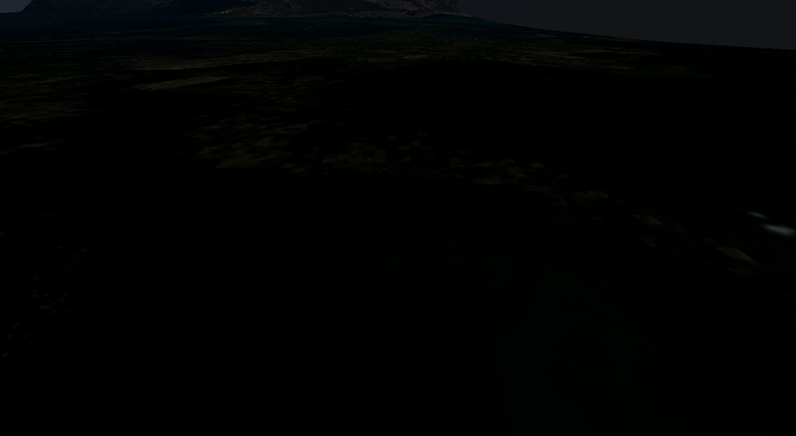
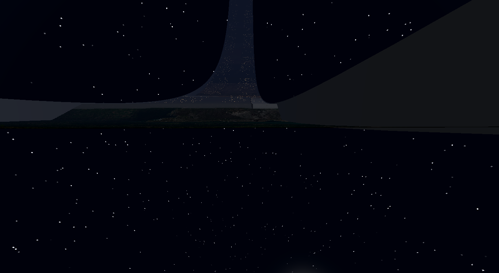
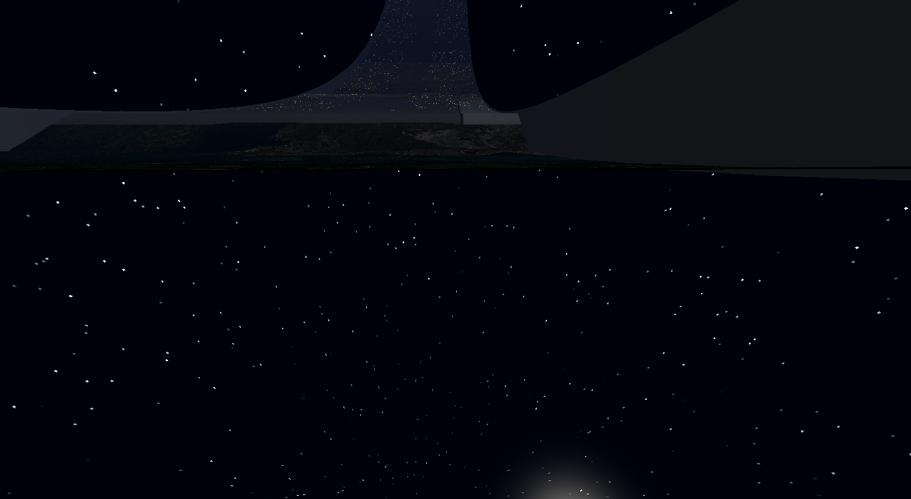
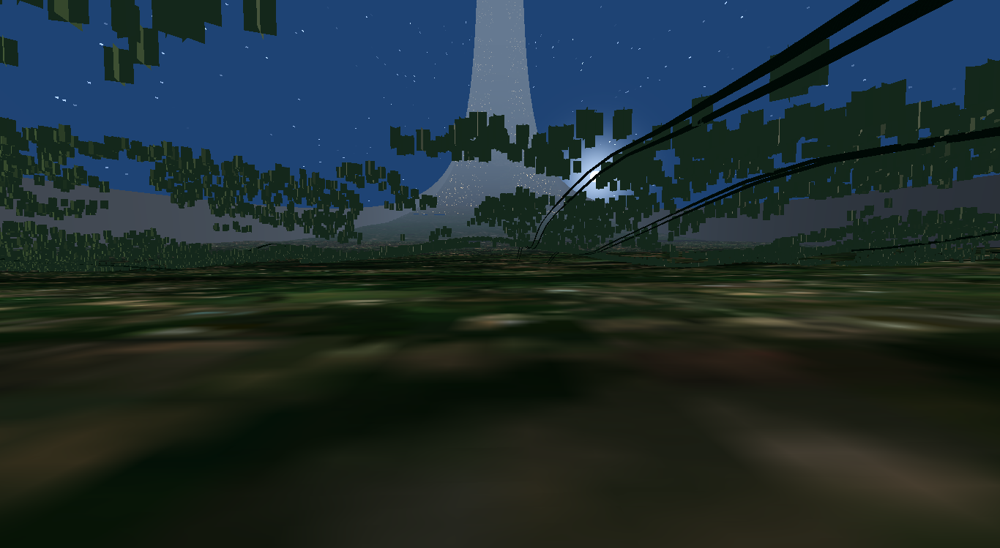
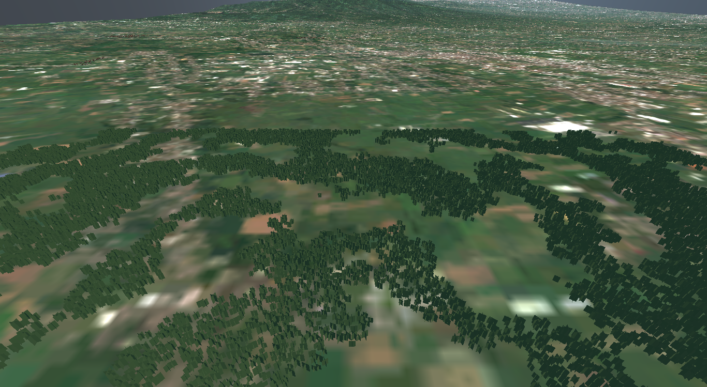
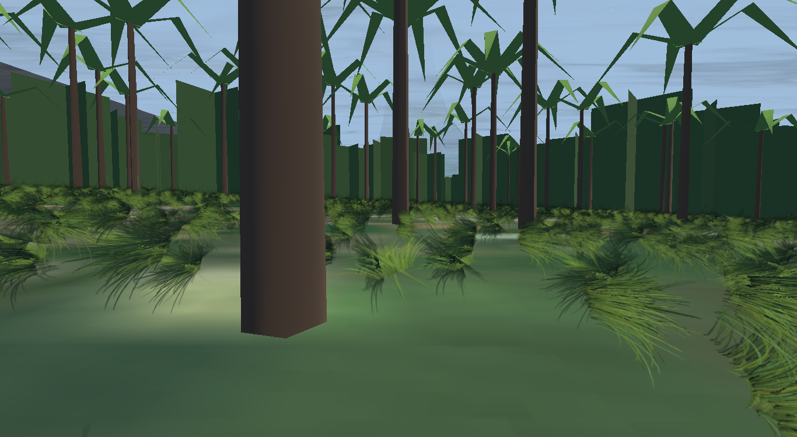
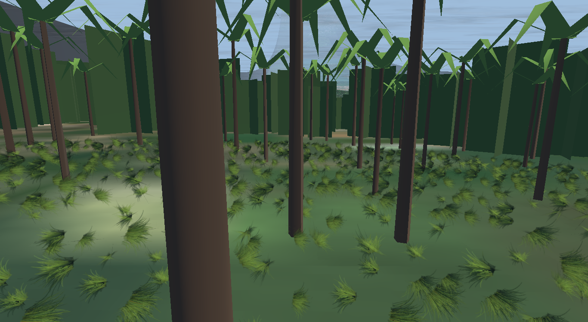
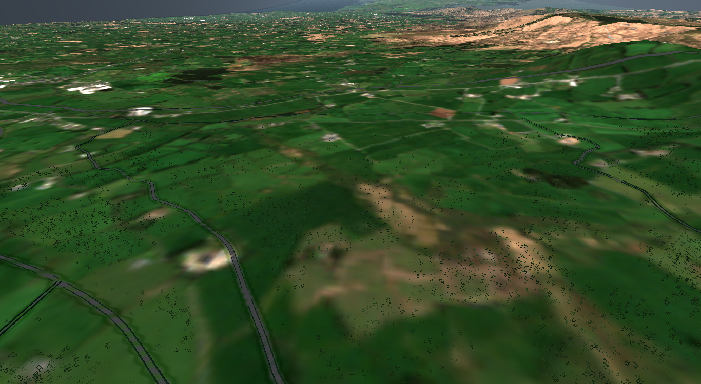
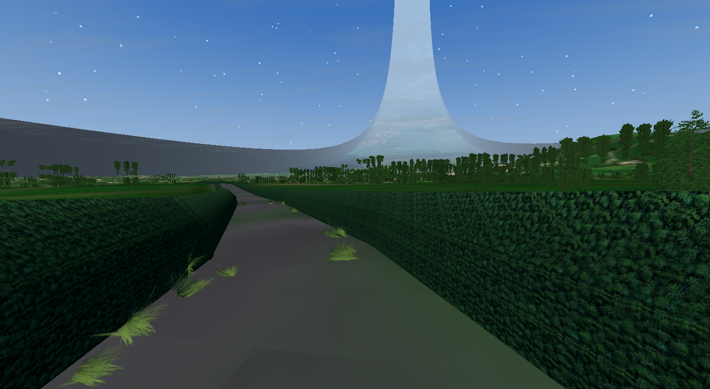
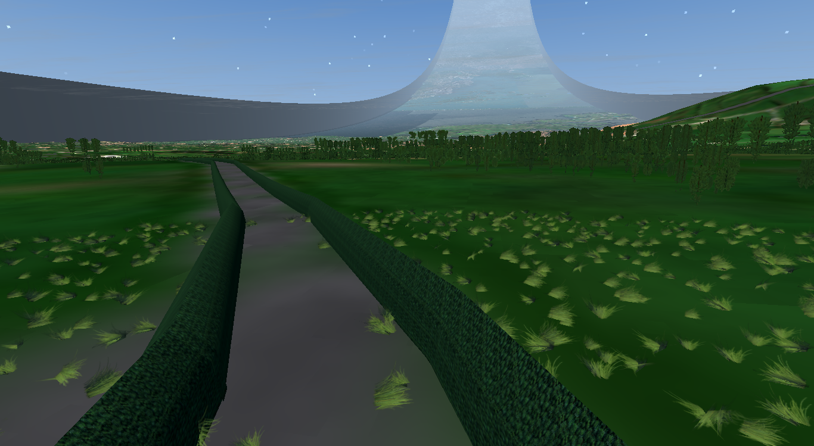

Every capture session, what it was taken to check, and what came out of looking at it. Click a title to open. Generated 2026-08-09 18:41 from JOURNAL.md.
No journal entry yet. Add one to JOURNAL.md and rebuild.










Images from these are in _archive/ and were overwritten repeatedly, so only the last state of each survives. Recorded from notes rather than from the files.
Looking for: whether a screenshot harness was even viable, having spent the whole project shipping visual work and waiting to be told it was wrong. Saw: it worked. Also 727k triangles at 13 fps, and the camera standing inside a tree. Fell out: triangle-budget task with a number attached; harness fixes to hide the HUD and step off the scatter centre.
Looking for: do hedgerows apply, mesh at junctions, follow the ground, sit on the right side. Saw: the ribbon followed the road correctly. Notched every 11m. Flat green, no texture. Standing 6-8m off the centreline, reading as a field boundary rather than a boreen. Fell out: three fixes — smooth dimensions along the run instead of per-span random; the texture was never loading (a .jpg with no .import file silently fell through to the procedural fallback); tightened to 3.9m. Junctions left unverified because none fell in frame, and queued separately.
Looking for: whether per-biome hedge kinds and gaps read. Saw: hedges had VANISHED. 8,656 quads down to 1,544. Fell out: the junction test was using the road mask, which is 44m per cell against a hedge 3.9m off the centreline -- both land in the same cell, so it rejected 82% of the ribbon. Replaced with junction cells derived from the centrelines. Resolution has to match the question being asked.
Looking for: whether generated palms read as palms rather than tinted firs. Saw: they did. Also 1,055,008 triangles at 3 fps. Fell out: generated species had no billboard tier while the imported pack did, so 27k palms cost ~30 triangles each to the horizon. Gave them a real 4-triangle far LOD: 594k tris, 29 fps.
Looking for: whether close-range ground cover reads under the car. Saw: first run, nothing at all. Second run, 5cm specks. Third, visible tufts — growing on the tarmac. Fell out: three findings. Grass gated on the road mask (the 44m resolution mistake again, an hour after diagnosing it). The pack's clumps are authored small. And the 8m road cells only marked cells containing OSM *nodes*, which are up to 200m apart, so the road between them was unmarked.
Looking for: where 700k triangles actually go, having only ever guessed. Saw: trees 493,914 (71%), far band 96,000, terrain 55,296, hedges 27,912, grass 11,656, buildings 6,424. And 24,019 of 24,037 trees were already in the "billboard" tier. Fell out: that tier's mesh cost ~16 triangles, not 2 — an artist LOD chain bottoms out at "very simple mesh", not at a quad. Replaced with a real crossed billboard: 700k -> 316k. Next largest is the far band at 96k, which is backdrop nobody stands on.
Looking for: palms at Java. Saw: 108k triangles of empty ring, and a log line reading "framed on a road at 229005m from centre". Fell out: the harness framed on the nearest centreline without a distance check, and _roadlines held only the home patch — so it flew 229km back to Millstreet to find a road while claiming to photograph Java. Now requires one within 5km and says so plainly when there is none.
---
Looking for: how vehicles handle over rough ground. Not a screenshot session — handling is telemetry, not a picture — but recorded here because the findings belong with the rest.
Saw: there was no suspension at all. The body was pinned to terrain height + 0.4 with wheels welded on, sliding over the ground like a decal. Nothing to measure.
Also: the "rough" phase was driving real terrain 60m off the road, and Millstreet is 95.7% drivable pasture — jolt of 0.03m. It was measuring nothing.
Fell out:
the body takes pitch and roll from the plane through the four contacts. Braking dips the nose and a hollow under one wheel leans the body, rather than the whole car tilting as one piece.
10-40cm, a 2.2m ramp with a sharp drop, then asymmetric potholes. Jolt 1.50m against 0.03m on real terrain, and it repeats exactly.
airborne was defined as "above rest position", which is true for half of every oscillation and reported four wheels off the ground while braking on the flat; and rest was the fully-extended position, when a parked vehicle sits partway down its travel under its own weight. With static sag the numbers went coherent: 0.05 travel on a smooth road, 0.19 under braking, 0.22 and four wheels light at full lock, 0.34 bottomed out on the strip.
Note: the strip is CPU-side only, so it is invisible — the shader knows nothing about it. That is deliberately the kind of drawn-vs-driven mismatch this project keeps getting bitten by, so it is confined to one 700m strip that only --proving drives to.
{kind=link}
{kind=link}
{kind=link}
{kind=link}
{kind=link}
{kind=link}
{kind=link}
{kind=link}
{kind=link}
{kind=link}